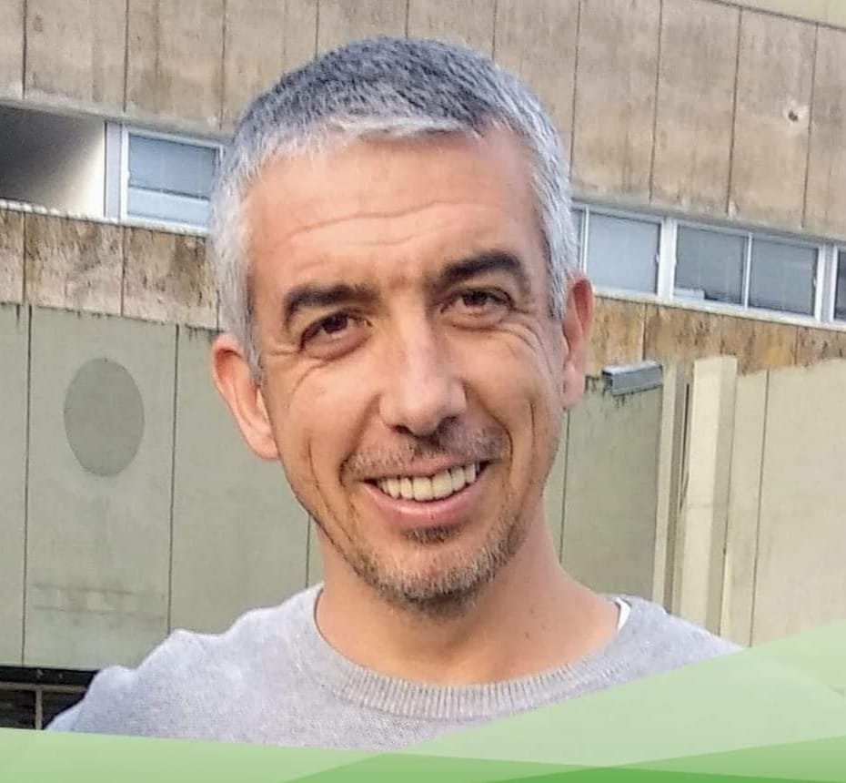

Pedro Herreros | WDD 130

Hi everybody! My name is Pedro, I`m studying Software development. I`m 45 and married with Virginia, we have 4 beautiful children. I`m a member of the church since 2012. I`m so happy to be the opportunity to study in BYU, it is a great blessing for me and my family. I was born in Valencia (Spain) but I live in Durazno (Uruguay).